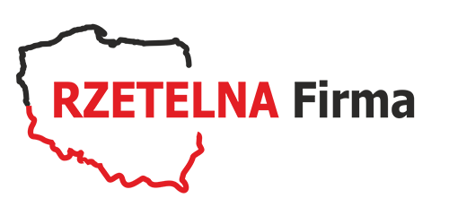
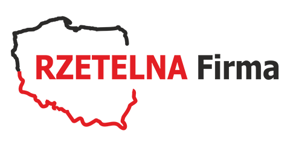

Witamy na stronie marki Nikta.
Nasza firma istnieje na polskim rynku od ponad pół wieku. Od samego początku związana była z produkcją obuwia. W 1989 roku firma rozszerzyła swoją działalność - tworząc firmę handlową o nazwie Nikta BIS. I ten okres należy przyjąć jako początek działalności handlowej firmy Nikta. W latach 1993 -96 następuje prężny rozwój firmy umiejscawiając ją w czołówce tak pod względem wielkości i jakości oferowanych towarów. Od tego też okresu firma zaopatruje małe i duże firmy produkujące obuwie, wyroby ze skóry; we wszystko co niezbędne do produkcji obuwia: materiały i maszyny. W nowe milenium firma wkroczyła z szeroką ofertą swoich usług, tak w zakresie materiałów jak i maszyn (maszyny obuwnicze, maszyny szwalnicze).
Nikta dzisiaj to...
...Szybkość i niezawodność działania Szeroka gama ferowanych usług Konkurencyjność Wysoko-wyspecjalizowany personel i sprawna organizacja Swoim zasięgiem firma obejmuje cały kraj poprzez dwa odziały w Bielsku - Białej i w Łodzi, które mają możliwość dotarcia do całego polskiego rynku dzięki systematycznemu pozyskiwaniu klientów oraz szerokiej sieci hurtowni zaopatrywanych przez firmę, czy pracę akwizytorów. Osobną rzeczą jest działalność eksportowa firmy; za naszym pośrednictwem towary i maszyny docierają przede wszystkim do takich krajów jak Ukraina, Białoruś, Litwa, Rosja etc.
W naszej ofercie...
... znajdują się maszyny obuwnicze, maszyny szwalnicze, materiały obuwnicze, materiały kaletnicze, rymarskie. Zapewniamy pełne zaopatrzenie przy produkcji bez względu czy jest to szwalnia, montaż, przygotowanie produkcji, rozkrój. W zakres oferowanych maszyn w wchodzą maszyny nowe oraz używane po przeglądzie technicznym lub remoncie kapitalnym wykonywanym w naszej firmie przez wyspecjalizowany personel. W oferowanych przez nas usługach oprócz sprzedaży maszyn oraz części zamiennych zarówno do maszyn szwalniczych jak i do maszyn specjalistycznych typu formowarki, przeszywarki, ćwiekarki, ścieniarki i wiele innych. Dokonujemy również usługowego remontu i napraw maszyn.
 
